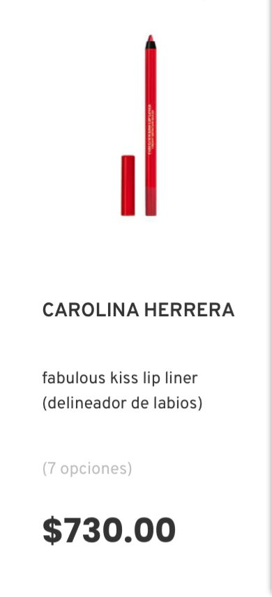
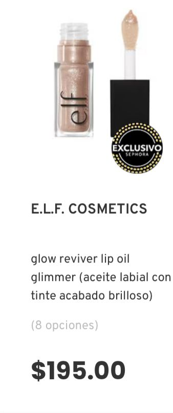
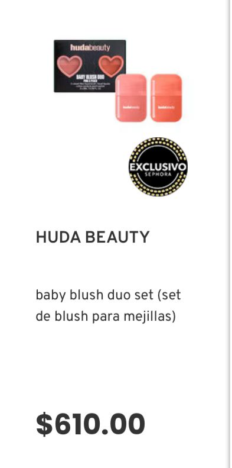
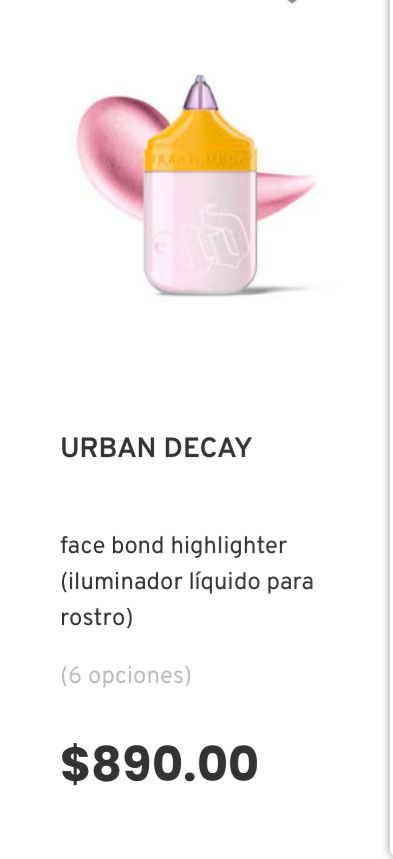
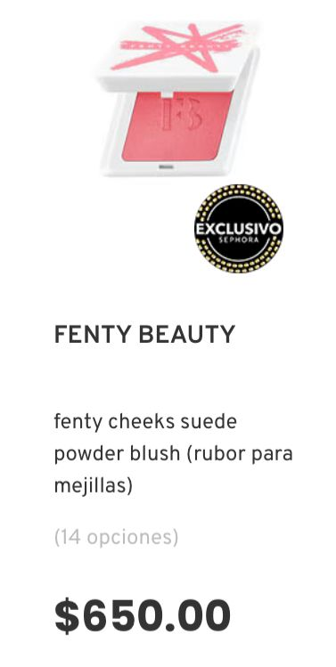
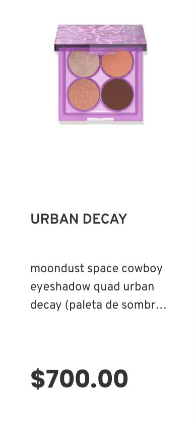
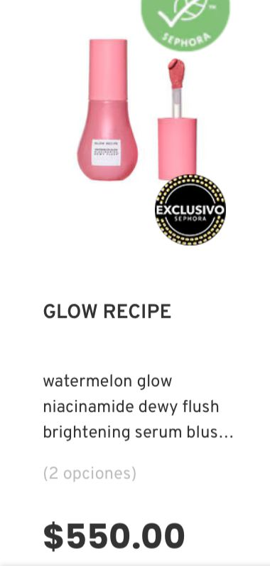

Sephora
Sephora es un concepto visionario de belleza y venta al por menor fundado en Francia por Dominique Mandonnaud en 1970. El ambiente único de Sephora ofrece total libertad de compra y la posibilidad de encontrar marcas clásicas, de tendencia y de nueva creación que siempre están en continua evolución. Las Marcas del portafolio de Sephora ofrecen una amplia gama de categorías de productos como maquillaje, cuidado para la piel, fragancias, cuidado para el cabello y además cuenta con su marca privada.
Hoy en día, Sephora no sólo es la cadena líder de perfumería y tiendas de cosméticos en Francia, sino también una poderosa presencia de belleza en países de todo el mundo.







Regresar